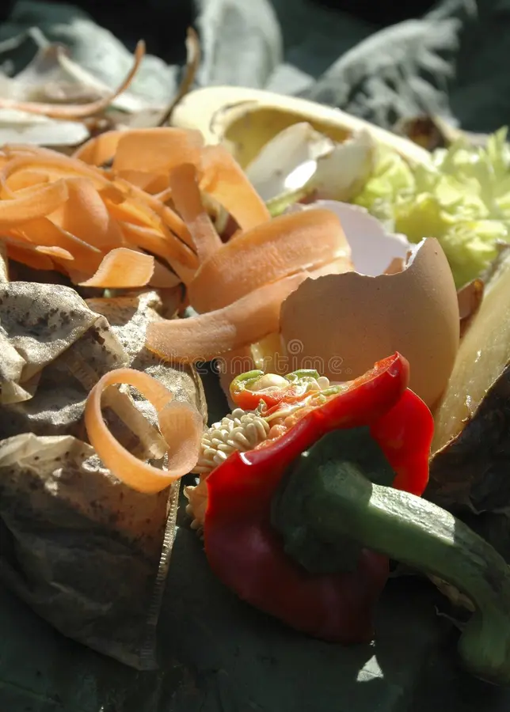
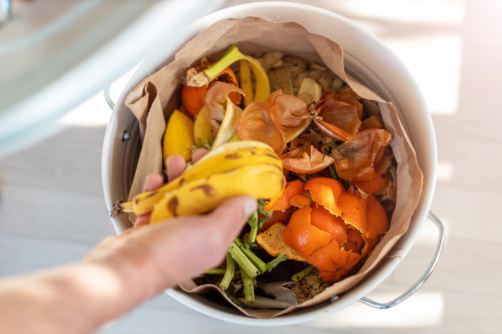

即易腐垃圾、易腐的生活废弃物。这类垃圾是居民日常生活及食品加工、饮食服务、单位供餐等活动中产生的垃圾，其主要来源为家庭厨房、餐厅、饭店、食堂、市场及其他与食品加工有关的行业。湿垃圾应该从产生时就其他品类垃圾分开收集。投放前尽量沥干水分，有外包装的应去除外包装投放。
Refers to perishable waste and easily decomposable household waste. This category of waste is generated from daily household activities, food processing, catering services, institutional dining, and other related activities. Its primary sources include home kitchens, restaurants, eateries, cafeterias, markets, and other industries involved in food processing. Wet waste should be separated from other types of waste at the point of generation. Before disposal, moisture should be drained as much as possible, and any external packaging should be removed.
谷物及其加工食品、肉蛋及其加工食品、水产及其加工食品、蔬菜、调料、酱料等。
Grains and processed grain products, meat, eggs and their processed products, aquatic products and their processed products, vegetables, condiments, sauces, etc.
火锅汤底、鱼骨、碎骨、茶叶渣、咖啡渣等。
Hot pot soup base, fish bones, small bones, tea leaves, coffee grounds, etc.
糕饼、糖果、风干食品、宠物饲料等。
Pastries, candy, dried food, pet feed, etc.
水果果肉、水果果皮、果实等。
Fruit pulp, fruit peels, seeds, etc.
家养绿植、花卉、枝叶等。
Plants, flowers, branches, leaves, etc.
上一篇：有害垃圾
下一篇：干垃圾